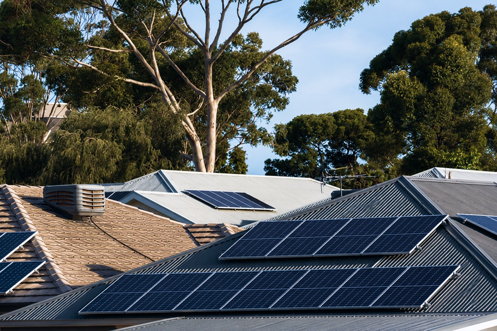
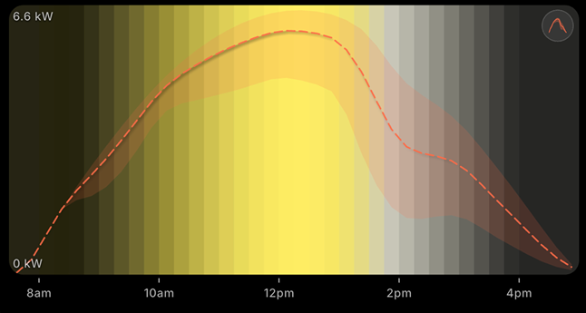

TL;DR: Solar forecasting combines weather-model data, the sun's known path and your panel specs to predict your system's output hour by hour, up to a week ahead and typically within 5-10% on a clear day. Knowing which hours will be strong lets you run big loads on your own solar instead of buying grid power.
Solar forecasting works by combining three inputs (a weather forecast for your exact location, the sun's precisely known path over your roof, and your own system's specifications) and running them through a physics model that converts expected sunlight into expected kilowatts. The output is a production curve for each upcoming day: a prediction of how much power your panels will make, and when. That prediction is what lets you plan your day around the sun instead of guessing.

What solar forecasting actually is
A solar forecast is a prediction of how much electricity your panels will generate over a coming period, usually the next few hours through to a week ahead. It is not a reading of what your system did yesterday, and it is not a fixed nameplate number. It is a forward-looking estimate that changes every time the weather forecast updates.
Grid operators and large solar farms have relied on this kind of forecasting for years, because they need to know how much generation to expect before it arrives. The same modelling can be scaled down to a single rooftop. The question shifts from "how much will the region's solar produce" to "how much will your array produce, given your roof and your local sky." Done well, the answer is specific enough to act on: not just "tomorrow looks sunny," but "tomorrow your system should make most of its energy between roughly 10am and 2pm, peaking near midday."

The ingredients: weather, irradiance and your system
Three ingredients go into every household solar forecast.
Weather. Numerical weather models predict cloud cover, temperature, humidity and sometimes aerosols and haze for your location. Cloud is the dominant factor: a passing bank of cumulus can cut output by more than half within minutes, then let it spring back. Temperature matters too, but counter-intuitively: panels are less efficient when they get hot, so a scorching afternoon can shave a little off production even under a clear sky.
Irradiance. This is the headline number: how much solar energy is reaching the ground, measured in watts per square metre. The forecast calculates it from the sun's exact position in the sky at your latitude, on that date, at that minute, then discounts it for however much cloud and atmosphere the weather models expect in the way. Irradiance is what the panels actually convert, so it sits at the heart of the model.
Your system. A forecast is only personal if it knows your hardware. Panel capacity in kilowatts sets the ceiling. Roof tilt and compass orientation decide how squarely your panels face the sun through the day: a west-facing array peaks later than an equator-facing one, and a flat roof behaves differently again. Shading from a tree, a chimney or a neighbour's wall carves predictable dips into the curve. Feed those details in once and every day's forecast is shaped to your actual roof.
Orientation changes the shape, not just the size. Two identical 6.6 kW systems on the same street can have very different curves: an array facing the equator (north-facing in the Southern Hemisphere, south-facing in the Northern) makes a tall midday hump, while a west-facing one shifts its peak into the afternoon. That is why "the best time to run appliances" is not a fixed clock time; it depends on the shape of your curve, which a forecast draws for you.
From sunlight to kilowatts: the physics in plain English
Turning predicted sunlight into predicted power is a chain of steps, each trimming a little off the theoretical maximum.
It starts at the top of the atmosphere with the raw solar energy heading toward Earth. The atmosphere absorbs and scatters some of it, and clouds block more; what survives is the irradiance reaching your roof. Next comes geometry: a panel only captures the full benefit of sunlight that strikes it head-on. When the sun is low in the morning or sits off to the side of where your panels face, the light arrives at an angle and the effective energy drops. This is why output ramps up after sunrise, builds to a peak, and tapers toward dusk in a smooth arc rather than switching on and off.
Then the panel itself converts light to direct-current electricity at a typical real-world efficiency, reduced slightly further when the cells are hot. Finally the inverter converts that DC into the alternating current your home uses, losing a few more percent in the process. Stack those losses together and the model lands on a realistic figure, not the nameplate rating, but what your roof should genuinely deliver.
The sun's path is perfectly predictable; the clouds are not. Solar forecasting is really the art of pairing astronomy you can calculate with weather you can only estimate.
That split explains a lot about forecast accuracy. The sun-position half of the calculation is essentially exact; we have known the geometry for centuries. All of the uncertainty lives in the weather half. On a settled, cloudless day the forecast can be very tight; on a day of scattered showers and broken cloud, the model is honestly working with a moving target.

Hourly vs 15-minute forecasts
Not all forecasts have the same resolution, and resolution matters for planning. An hourly forecast gives you one production figure per hour, plenty to answer "is tomorrow morning a good time for the washing." A finer 15-minute forecast captures the shape within each hour: the sharp dip as a cloud passes, the quick recovery afterward, the exact shoulder where production starts falling away in the late afternoon.
The right resolution depends on the data available for your region and on what you are scheduling. For a dishwasher that runs for an hour, hourly detail is fine. For something you want to nudge into the very strongest part of the day, finer detail helps you place it more precisely. OnSun forecasts at 15-minute to 1-hour intervals depending on your location, using the highest-resolution data each area supports, so the recommendation you get is as sharp as the underlying data allows, and no sharper. A wrinkle from building this: radiation feeds arrive as interval averages rather than instantaneous readings, so a naive chart shifts the whole curve by half an interval. It is a small detail, but it is the difference between telling you the peak is at noon and quietly plotting it at half past.
Why a forecast beats looking at yesterday's data
Plenty of solar owners glance at their inverter app, see what the panels did yesterday, and assume today will be similar. Most days that is roughly true, and then it isn't, exactly when it matters. Yesterday's generation tells you about yesterday's weather. If a front is moving through, or the season is turning, or tomorrow happens to be the one clear day in a cloudy week, history quietly leads you astray. You run the washing at noon expecting strong sun, and it stays grey until three.
A forecast flips the question from "what did my panels do" to "what will my panels do." It folds in tomorrow's specific cloud pattern, the lengthening or shortening days as the season shifts, and the exact sun angle for that date. That is the difference between reacting to the past and planning for what is coming. For the longer view on timing each appliance to the curve, our guide on the best time to run appliances with solar goes deeper.
Turning a forecast into real savings
Here is the part that touches your bill. A forecast does not generate a single extra watt; it changes when you use the watts you already make. That matters because of a price gap most solar households never quite reconcile: the rate you are paid to export surplus solar is usually a fraction of the rate you pay to import grid power a few hours later.
Read those figures together and the opportunity is obvious. If you export a kilowatt-hour for six cents and buy it back that night for thirty-five, you have effectively paid nearly thirty cents to borrow your own energy. Multiply that across the 50-70% of production a typical household exports, and the leakage adds up to hundreds of dollars over a year. The way to plug it is to lift your self-consumption, the share of solar you use on site, by moving flexible loads into the hours your forecast says the sun is strong. We unpack that trade-off in full in feed-in tariffs vs self-consumption.
A forecast is what makes the shift practical rather than hopeful. Instead of "I think it'll be sunny," you get "Thursday is your strongest day this week, with the peak from 11am to 1pm: run the dishwasher and top up the EV then." OnSun turns the production curve into exactly those recommendations, then tracks the grid power you avoided so you can see the self-consumption climb. One honest caveat: those savings are estimates, and OnSun does not switch your appliances on or off for you; it tells you the best moment and leaves the decision (or your own timer) to do the rest. If you would like the broader picture of solar economics first, the OnSun Solar Savings Guide is the place to start, and our support page answers setup questions.
That is the whole idea in one line: forecasting tells you when the sun will pay you the most, so you can stop renting back energy you have already generated for free.
Key takeaways
- A solar forecast blends weather-model data, sun-position geometry and your panel specs (size, tilt, orientation) into an hour-by-hour production curve.
- Sunlight becomes power through a chain of efficiency losses (atmosphere, angle, panel temperature and inverter) that the model accounts for.
- A forecast does not save money on its own; it tells you when to run appliances so you use your own solar instead of exporting it cheaply and buying it back.
- Forecasts beat looking at yesterday because tomorrow's clouds, not yesterday's sunshine, decide tomorrow's output.